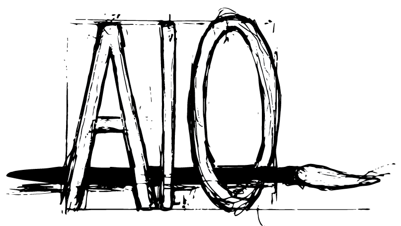

Built and taught by formerly incarcerated people
What’s next?
That is the question waiting on the other side of the gate, and the one nobody hands you an answer to. Next Reentry is transitional education for people coming home. Every lesson was written by someone who did the time, came out, and had to work out the answer the hard way. We keep it current, because the world you are walking into changes faster than any program can sit still.
No statistics on this page. We publish numbers after we have measured them, not before.
A second chance needs more than a release date.
The Better Neighbors work was helping people leaving prison and addiction rebuild their lives through art, education, and a community that expects them to make it. That foundation holds. Everything on this site is built on top of it.
Reentry is not a personal failing. It is a design problem, and a design problem can be fixed.
Art Inside Out
A twelve lesson art program built by Kirk Charlton during his years inside Eastern Oregon Correctional Institution. It turns making art into a way to change, and it has its own home.
Reentry support and education
Practical help and self directed skills for the first hard months out. This is the pillar our fourteen lessons sit inside, and the one that lived experience changes most.
Community and belonging
Members, mentors and neighbours who turn a release into a real return home. Nobody rebuilds a life alone, and the first year is when that is truest.
Repair, not rescue.
We do not fix people. We help them rebuild, balance and belong. The strength
comes from the mending, which is the same thing Art Inside Out teaches with a
pencil. You do not erase the wrong line. You read it.

Our flagship program
Art Inside Out, and the man who built it inside.
Kirk Charlton is an artist, author and educator. He created Art Inside Out while he was serving time at Eastern Oregon Correctional Institution, using art as the way into the conversations that actually change how a person sees themselves.
It is the clearest example of what this organisation believes. A program written by someone who was in the room, for the people still in it. He has since written and illustrated the program editions and a series of children's books, and he still teaches it.
Art Inside Out is the flagship. Everything else we teach is built beside it.
Knowing the system is not the same as having lived in it.
Most reentry organisations are staffed by people who studied this population. They are sincere and they are often good at their jobs. But there is a gap between reading about a thing and waking up inside it for years, and that gap shows up in the advice.
Everyone building the Next Reentry curriculum has done time. We are not translating research into practice. We are handing over the notes we made while surviving it, and then checking them against what is actually true this year.
A degree cannot beat knowledge plus the years. We have both, and we built this so the next person does not have to learn it the way we did. That is the niche, and it is one most organisations in this sector cannot fill no matter how well funded they are.
We keep it fresh
Trends move faster than curriculum. We research constantly and rewrite, because advice that was right four years ago can get someone hurt now.
We are not a pamphlet
One to one consultation and a starter kit for the things nobody hands you on the way out the door.
Everyone, not just men
The released population skews male. The need does not. Everything here is built for women coming home too, and it is written that way on purpose.
Community, not caseload
The anxiety and the overwhelm after release are real and close to universal. Naming that out loud is part of the work.
Five rooms decide how the first year goes.
Nobody fails reentry in the abstract. It comes down to a handful of rooms with a handful of people in them, and in each one you are being read before you have said anything. Here is what is really being asked, and what we teach people to bring.
-
Room 01
Report as directed
Your parole or probation officer
The check in is not a conversation and it is not a trap either. It is a record. What gets written down is whatever is easiest to write down.
Bring the same short, specific, boring answer every time. Consistency reads as stability, and stability is the only thing being measured.
-
Room 02
Have you been convicted of
A hiring manager
The box is not the moment. The moment is thirty seconds later, when a person decides whether you are going to be a problem for them.
Say it in one sentence, in your own words, before it is found. Owning it early moves the conversation to what you have done since.
-
Room 03
Subject to background screening
A property manager
Housing is where a record does the most damage the fastest, and it is usually decided by somebody following a policy rather than making a judgement.
Find out who can actually say yes before you fill anything in. Applying blind burns the fee and the answer was never theirs to give.
-
Room 04
No formal requirement
Someone you want to date
No policy, no form, no timeline anybody agrees on. This is the room people get the least help with and lose the most sleep over.
Decide what you disclose and when before you like somebody, not during. A decision made in advance is kinder to both of you.
-
Room 05
Publicly available
A stranger, and everyone online
The record surfaces on its own, at a time you did not pick. Being permanently online is sold as connection and it is mostly exposure.
Know what is findable about you before someone else finds it, and choose how much of your life needs an audience at all.
None of this is legal advice, and none of it is a promise about how any particular officer, employer or landlord will behave. It is what the people who built this organisation learned by walking into these rooms themselves.
You are not the worst thing you did. You are also not excused from it.
Nothing here removes culpability or responsibility for harm caused. This is not denial and it is not erasure. People did real damage and they own it.
What we refuse is the part where a person becomes the decision permanently. The layers of shame run deep, and society keeps adding to them, often for something done decades ago by someone who barely resembles the person walking out today. Both things are true at once. Everything we teach lives in that space.
What nobody hands you on the way out.
A caseworker writes "financial literacy". Someone who did the time writes "the $500 card". The difference in those two names is the whole reason this organisation exists.
Your first phone in a decade
The device is not neutral. Notifications, urgency and the pull to check it constantly are engineered, and they land hardest on a nervous system already running hot.
Who is actually texting you
People coming home are targeted on purpose. New number, new accounts, no history, and a strong wish for things to work out. We teach the patterns.
The $500 card
Starting from nothing has a specific path and it is not obvious. The small limit secured card is a tool, not a trap, if you know how it is scored.
Sitting across from your PO
How to prepare, what to bring, what to say and what to never say. Not gaming anyone. Being clear, documented and calm in a conversation that matters.
The feed is not your friend
The pressure to be online is a farce, and for this population it is closer to a liability than a lifeline. We say that plainly and give the alternative.
Why your brain does that
Understanding your own wiring changes what you expect of yourself. Where you struggle and where you excel usually have the same root.
Reentry is a timeline, and only people who lived it think in these units.
Nobody on the outside measures a year in seventy two hours, thirty days and six months. Everybody who has come home does. Here is what tends to happen, and when.
Everything is louder than the room you left.
- The noise and the speed hit first. Traffic, stores, voices, screens. It is physical.
- Someone hands you a phone and expects you to already know how it works.
- Identification, an address and a phone number are three doors, and each one wants the other two first.
- An appointment is already on the calendar, and missing it costs more than it should.
- Someone asks what you want to eat and you genuinely do not have an answer.
The paperwork stacks faster than the days do.
- People who offered help before release get harder to reach after it.
- The first money goes before it lands, and nobody warned you about the gap.
- You start noticing who asks about your case and who asks about you.
- The excitement wears off around week three. That is normal and it is not failure.
- Every form wants a history you cannot summarise in a box.
A routine either forms or it does not.
- Everything downstream depends on whether a rhythm took hold in these months.
- The record surfaces somewhere you did not expect. An application, a search, a conversation.
- A first real rejection tied to your past lands harder than you planned for.
- Credit turns into a wall you cannot climb without a system, and the system is not obvious.
- You find out who your actual people are.
The label stops being an emergency and starts being weather.
- It still shows up. You stop being ambushed by it every time.
- Work either becomes a job or becomes a direction, and the difference is deliberate.
- Somebody newer than you asks for help, and that is the turn.
- The anniversary hits harder than expected.
- You plan past next week for the first time in years.
Would you have called it?
People coming home get targeted on purpose. New number, thin history, and a real wish for something to finally go right. Three messages. Two are scams.
USPS: your parcel could not be delivered, incomplete address. Update it here: usps-redelivery-track.com
Hey is this you? Got your number from a mutual friend. I mentor people building side income and I think you would be good at this. You open?
Your bank: we declined a $340 charge on your card. If this was not you, no action is needed. Questions, call the number on the back of your card.
The rule underneath all three: does it send you somewhere you already trust, or somewhere it chose for you. That single question catches most of them.
What you have, not what you lost.
Restrictions are real and pretending otherwise is useless. So is spending a decade staring at the column you cannot change. Both lists below are true. The work is refusing to let one of them be the only one.
Flip between them. Notice which one you already had memorised.
Every story we collect makes the map better for the next person.
This curriculum is not finished and it never will be. It gets sharper every time somebody who has been through it tells us what was hardest, what actually helped, and what nobody warned them about.
You can do it anonymously. We do not need your name to learn from what happened to you.
Nothing anyone sends gets published until they have given permission for that specific thing, freely, in writing, and they can withdraw it at any time. A quote taken without consent is a second thing done to someone who has already had enough done to them.
What we ask
Three questions. What was hardest, what actually helped, and what nobody told you. That is the whole form.
There is a way in at every level.
Bring your experience
If you came home and made it work, you know something worth handing over.
Open a door
Employers and property managers willing to look at a person instead of a record.
Send someone here
Facilities, supervision officers and family who want something real to hand over.